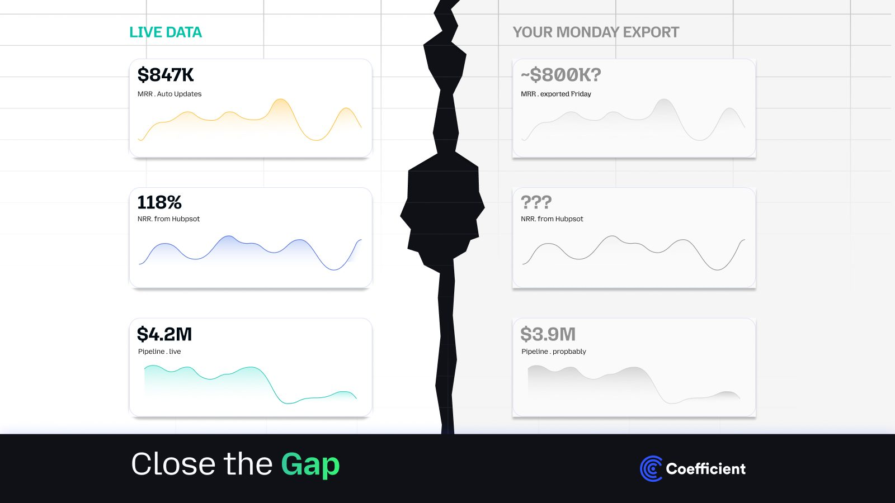
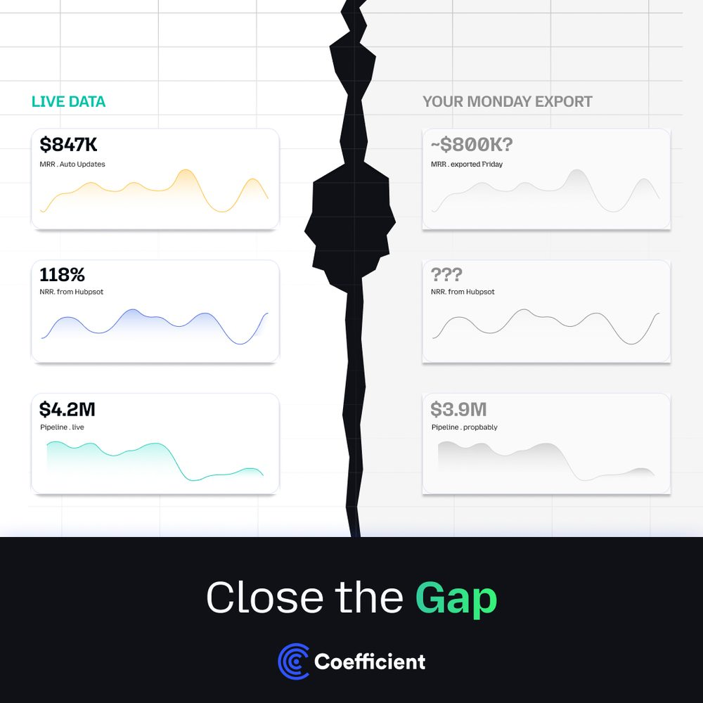
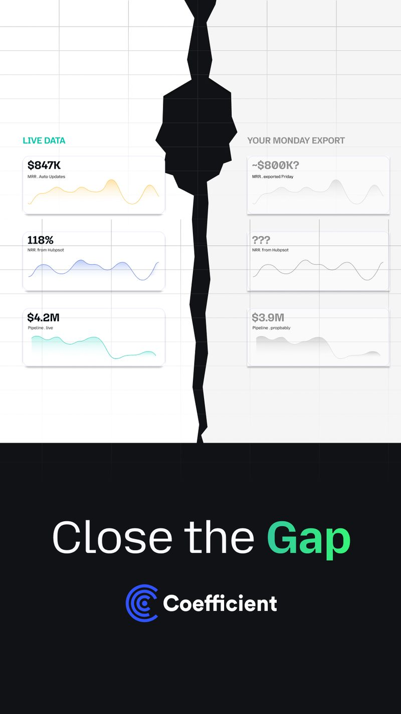
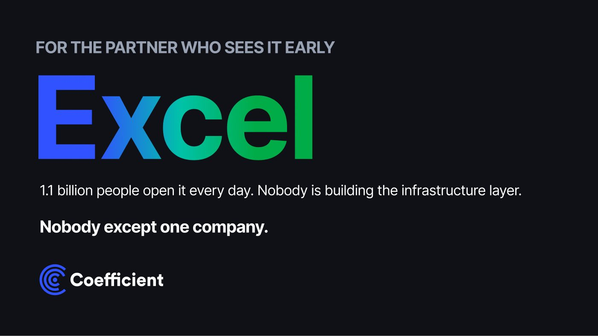
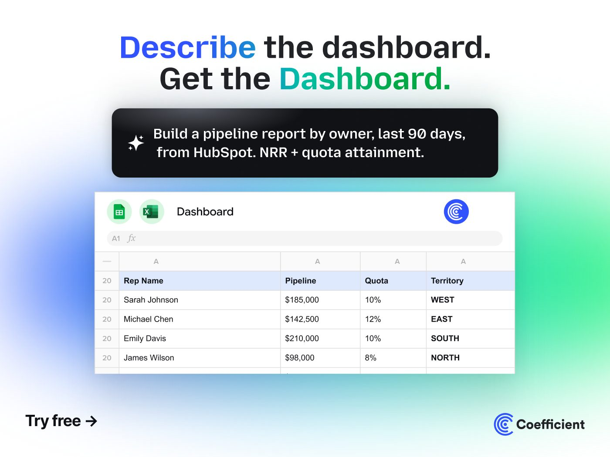
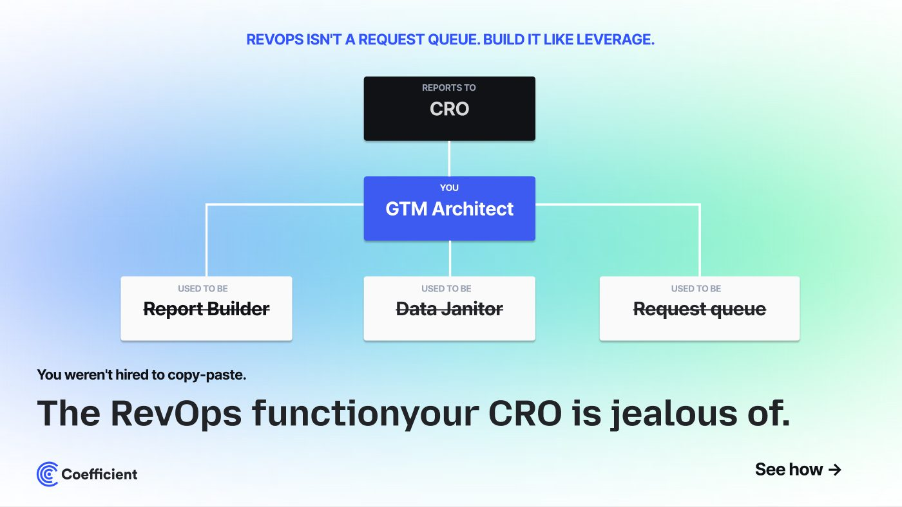
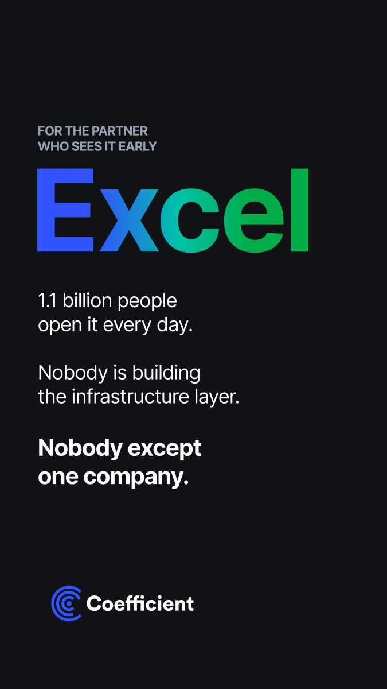
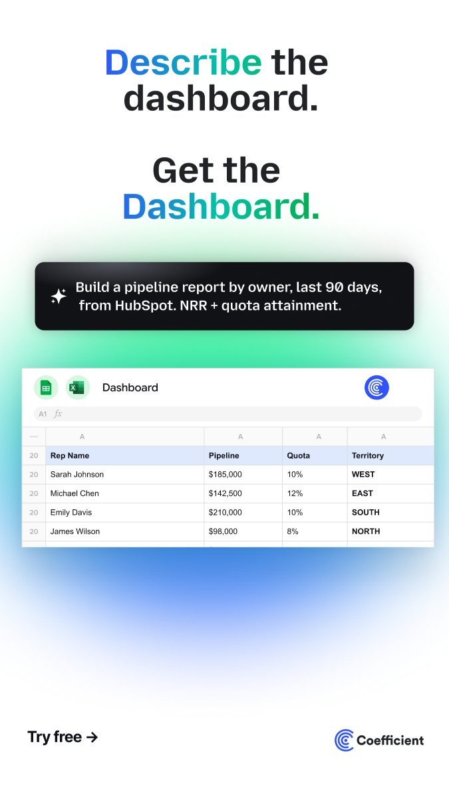
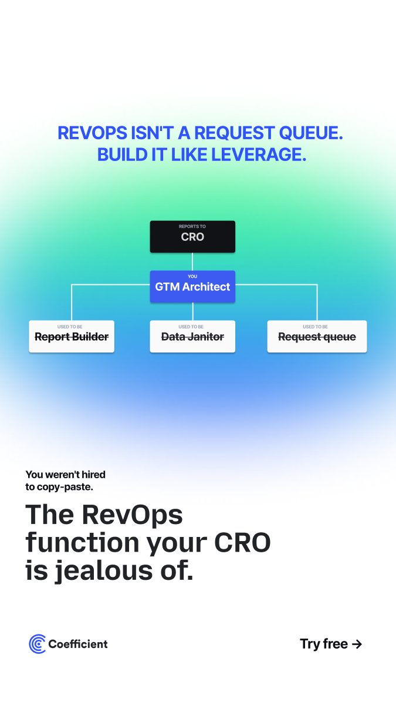

A concept-led paid-social campaign — four sharp ideas for a live-data platform, built across every format.

Coefficient keeps spreadsheets connected to live company data. Rather than one message, the campaign runs as a set of bold, concept-led directions — each dramatising a different reason the product matters, and each built out across landscape, square and story placements.
The lead idea makes the value visible in a single image: a torn “Monday export” on one side, live dashboards on the other, and the gap between stale and real-time numbers impossible to miss. The tear does the talking before a word is read.


“1.1 billion people open Excel every day. Nobody is building the infrastructure layer — nobody except one company.” A giant gradient wordmark reframes a familiar tool as an untapped platform, and makes a category claim with total confidence.

“Describe the dashboard. Get the Dashboard.” A plain-language prompt resolves into a live pipeline report, pulled from HubSpot with NRR and quota attainment — the product’s promise shown as a before-and-after in one frame.

“The RevOps function your CRO is jealous of.” An org chart reframes the spreadsheet as leverage rather than grunt work — a sharper, insider angle aimed squarely at revenue teams.

Each concept is cut for the placement it runs in — feed, story and display — so the campaign stays recognisable whether it’s a square post or a full-screen story.



A flexible, multi-concept ad system: four distinct ideas that each stand on their own, united by one voice and built to run cleanly across every paid-social and display placement.